Precast tunnel lining segments
A precast segmental tunnel lining is a ring of curved concrete segments placed behind a tunnel boring machine to support the ground. The group tests full-size segments reinforced with steel or synthetic fibers in flexure and under thrust loads, works the tension properties of the concrete back from beam tests for use in design, and applies statistical process control to segment production.

Precast segmental tunnel linings
Precast concrete tunnel segments are installed to support the tunnel bore behind the tunnel-boring machine (TBM) in soft ground and weak rock applications. The TBM advances by reacting against the completed rings of precast concrete segments that typically provide both the initial and final ground support as part of a one-pass liner system. These segments are typically designed to resist the permanent loads from the ground and groundwater, as well as the temporary loads from production, transportation, and construction (ACI 544.7R).
Fibers and reinforcing bars
Fiber-reinforced concrete (FRC) can result in improved durability and toughness at SLS (service limit state) since fibers can reduce crack spacing and crack width. FRC can also be used to improve the behavior at ULS (ultimate limit state) where fibers can partially or totally substitute conventional reinforcement.
The conventional reinforcement, a cage of steel bars, takes space, time and labor to assemble and leaves the concrete cover at the joints and corners unreinforced, so spalling and bursting cracks form there. Fibers are distributed through the whole segment, so macro steel and synthetic fibers can reduce or even eliminate the bars and reinforce the vulnerable edges and corners. A hybrid design of fibers and bars is adopted when fibers alone are not adequate, as in large diameter tunnels.

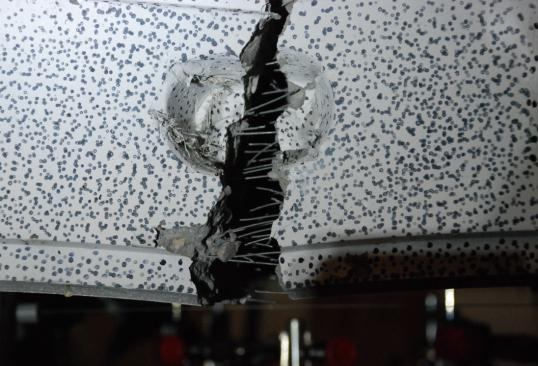
Full-scale test frames
The performance of tunnel segments compared to conventional designs can be tested with full-scale testing of the precast segments. The design methodology developed at ASU utilizes parameterized stress-strain models generated using closed-form solutions that were verified with full-scale testing of tunnel lining segments in the large-scale structures lab at ASU. The precast tunnel segments must be tested for flexure loading and compression point loading whose setup and instrumentation are shown in the figures.
Each frame has a capacity of 1800 kN (400 kips), and the compression frame presses two actuators on the edge of a standing segment to replicate the TBM thrust jacks. In flexure, four displacement transducers (LVDTs) measure deflection, four string sensors measure crack width and four strain gages measure strain. Digital image correlation (DIC) follows a speckle pattern on the segment to map the strain over its surface.

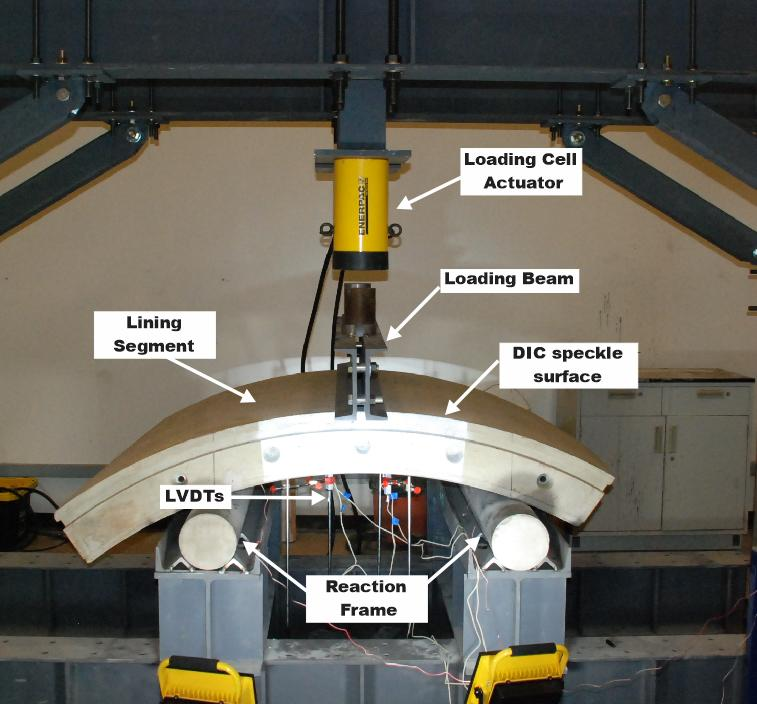

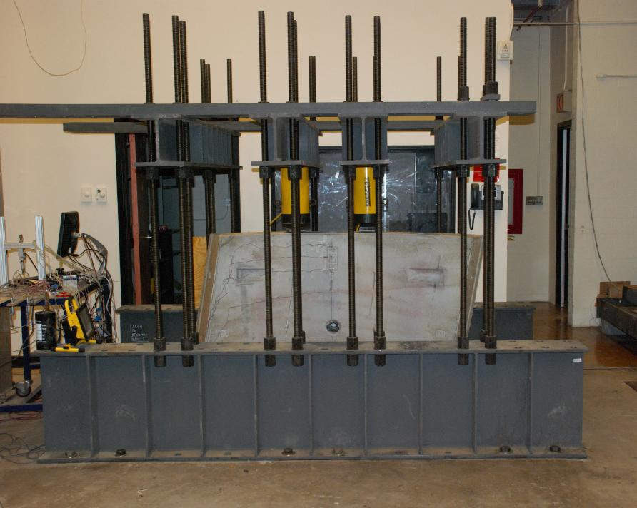
Flexure tests with steel and synthetic macro-fibers
Twelve segments of 1220 × 1270 × 190 mm were cast with fibers as the primary reinforcement. One mixture carried 29.6 kg/m3 of steel fibers and two carried 7.1 and 8.3 kg/m3 of polypropylene macro-fibers, dosages set by matching the residual strength of the steel fiber concrete in beam tests. Residual strength is the stress that cracked concrete still carries through the fibers bridging the crack.
Nine segments, three per mixture, were loaded in three-point bending over a span of 990 mm. Each failed by a single crack at midspan. At a deflection of 3.3 mm the segments with the higher polypropylene dosage held an average of 126 kN, against 110 kN for the steel fiber segments and 89 kN for the lower polypropylene dosage. Beyond 8 mm the steel fiber segments carried the most load. The coefficient of variation of the post-crack response fell from 14% in the beams to 7% in the segments.

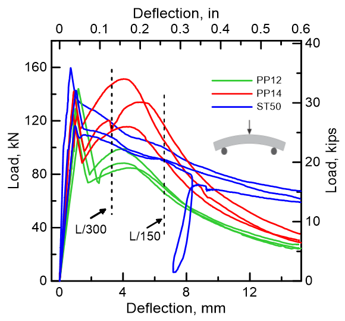

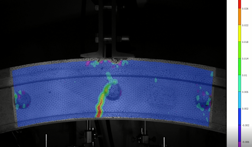

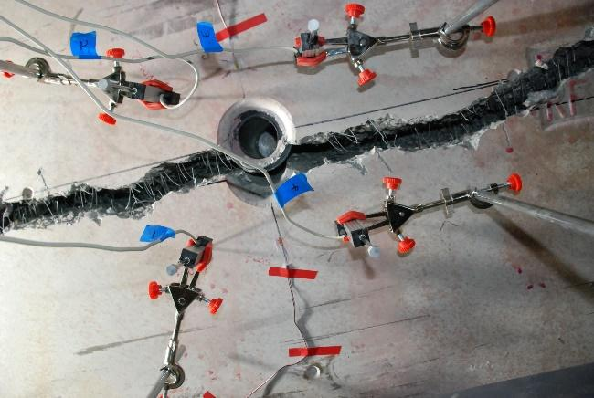
Thrust load tests
The thrust test stands a segment on its edge and loads the top edge at two points 457 mm apart, as the TBM jacks do. One steel fiber and one polypropylene fiber segment were tested on steel plates in line with the load points. Both stayed linear until cracks opened under the loading pads, at 1667 kN for the steel fiber segment and 1587 kN for the polypropylene segment. The failure under thrust is therefore tensile. The concentrated jack forces set up transverse bursting stresses below the pads, and these crack the segment.

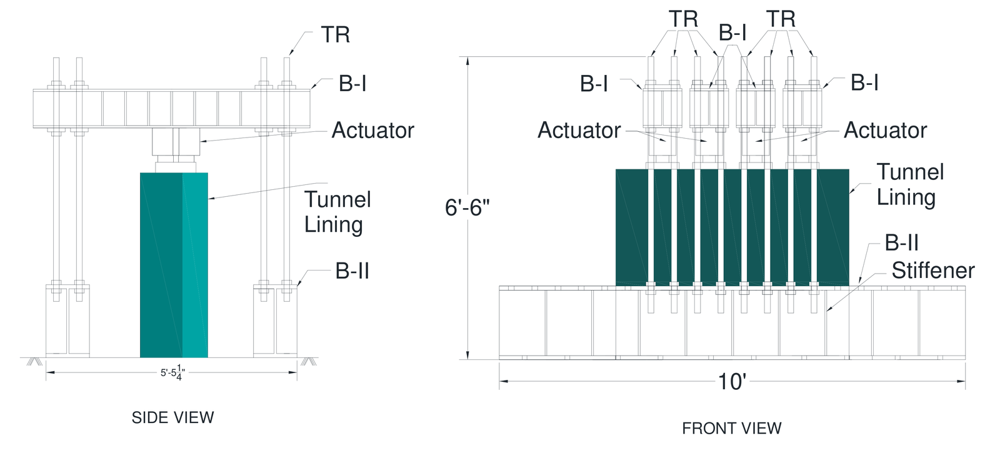

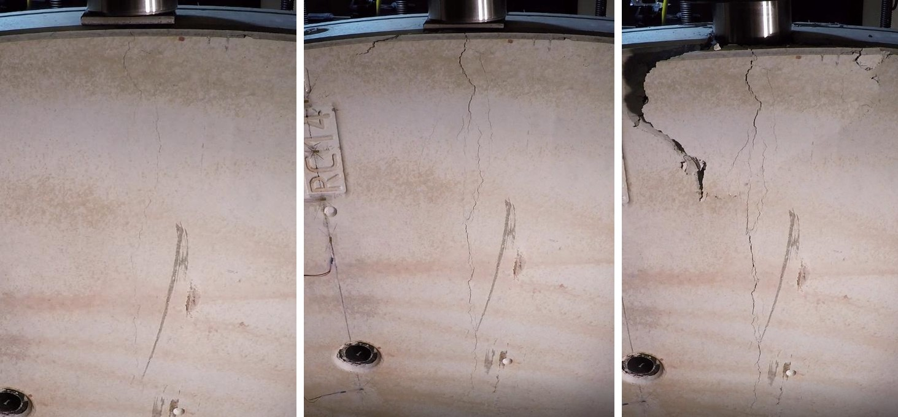
Back-calculation of material properties and design
The tension properties of the fiber concrete are worked back from the ASTM C1609 test, which records load against deflection for a 150 × 150 mm beam in four-point bending. Tension is described by a stress-strain curve of four straight lines and compression by two, and their parameters are adjusted until the closed-form solution reproduces the measured curve. The approach follows the ACI 544.8R report on the indirect method to obtain the stress-strain response of FRC. The same parameters then give the load-deflection response of a full segment, which was checked against the full-scale tests.
In design the back-calculated properties enter the interaction diagram, a curve of the combinations of axial force and bending moment that a section can resist, because most load cases put a segment under both. Closed-form solutions for the interaction diagram of hybrid segments were published in 2018.

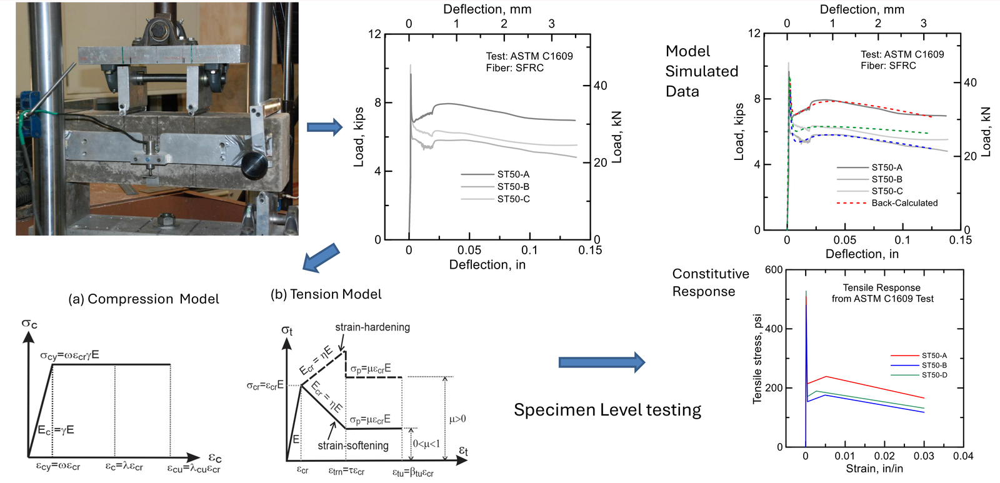

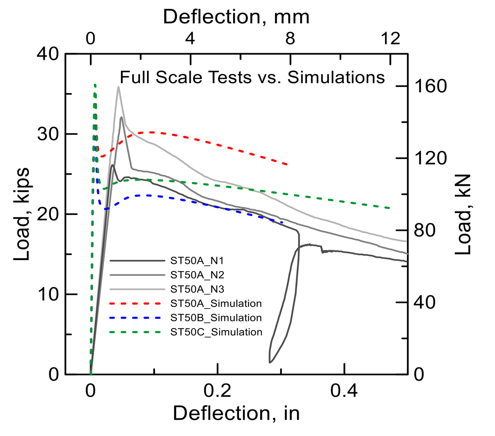
Statistical process control of segment production
Production of the steel fiber segments for the South Hartford Conveyance and Storage Tunnel, a wastewater tunnel 6.7 km long, was checked by testing ASTM C1609 beams on each production day. Over 18 months this gave 1060 beams, of which 817 were tested at 28 days against a specified strength of 3.7 MPa (540 psi).
Statistical process control reads these results in order of production to find when the process drifts. A run chart plots each result against its date, the exponentially weighted moving average (EWMA) chart averages each result with its recent neighbors, and the cumulative sum (CUSUM) chart adds up the deviations from the target. Between observations 300 and 450 the EWMA charts of the residual strengths signaled a process out of control, and that range held the most results under the specification. A bootstrap analysis, which resamples the data many times, showed that 25 beams bring the coefficient of variation of the residual strength down to 5%.

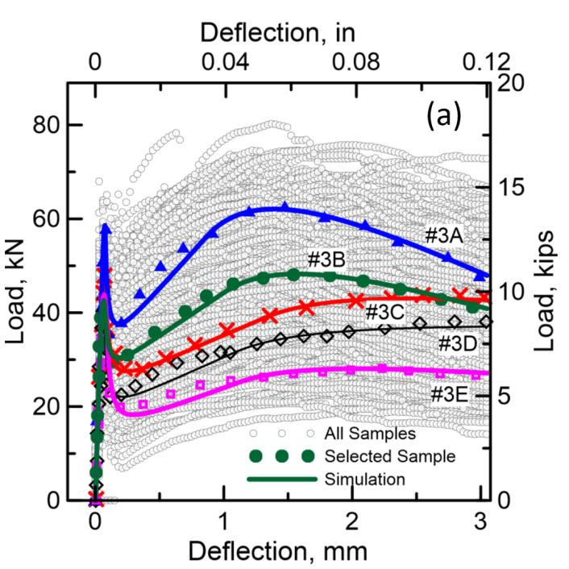

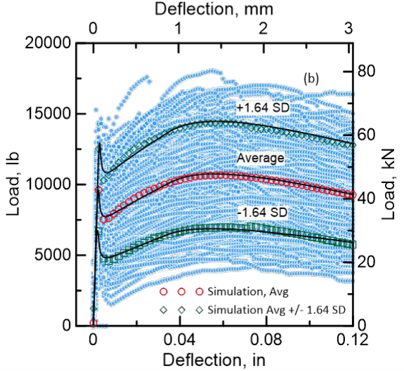

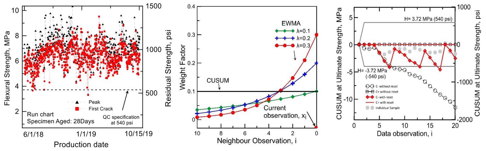
Papers
All publicationsInteraction diagrams for design of hybrid fiber-reinforced tunnel segments
Materials and Structures, 51
Mechanical response of precast tunnel segments with steel and synthetic macro-fibers
Cement and Concrete Composites, 144, 105303
Statistical Process Control of Fiber-Reinforced Concrete Precast Tunnel Segments
ACI Materials Journal, 121 (2), 127-139
Back-calculation of mechanical properties of fiber-reinforced concrete in tunnel lining segments
Structural Concrete, 26 (5), 6019-6040
Validation Testing of Precast Tunnel Lining Segments Using Polymeric Fibers
Fibre Reinforced Concrete: Improvements and Innovations II, 820-830
Applications of Statistical Process Control in the Evaluation of QC Test Data for Residual Strength of FRC Samples of Tunnel Lining Segments
Fibre Reinforced Concrete: Improvements and Innovations, RILEM-fib
Test footage
All videosFull-scale tunnel lining segment under load
A curved precast segment in the loading frame, with the measured deflection profile along the segment and the load-deflection response updating as the test runs.
Full tunnel segment in flexure
A curved precast tunnel lining segment under three-point bending with the digital image correlation strain field overlaid.